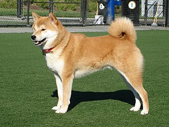
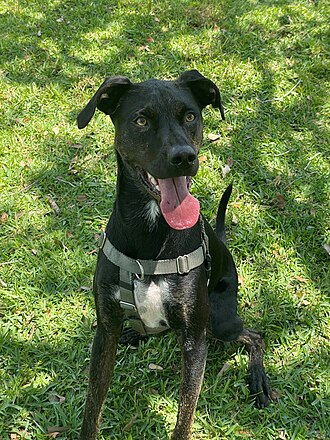
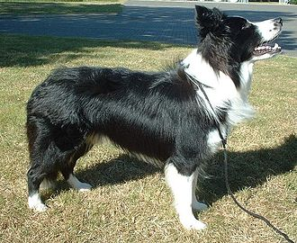

Bluey (7 June 1910 – 14 November 1939) was a female Australian Cattle Dog owned by Les and Rosalie Hall of Rochester, Victoria. She previously held the Guinness World Records as the oldest dog to ever live, until being surpassed by Bobi from Portugal in 2023.

The Welsh Sheepdog (Welsh: Ci Defaid Cymreig, pronounced [kiː ˈdɛvaɪd kəmˈrɛɨɡ]) is a breed of herding dog of medium size from Wales.

The Labrador Retriever or simply Labrador is a British breed of retriever gun dog. It was developed in the United Kingdom from St. John's water dogs imported from the colony of Newfoundland (now a province of Canada), and was named after the Labrador region of that colony

The Shiba Inu (柴犬, Shiba Inu, Japanese: [ɕiba inɯ]) is a breed of hunting dog from Japan. A small-to-medium breed, it is the smallest of the six original breed of dogs native to Japan.[1] Its name literally translates to "brushwood dog", as it is used to flush game.
A mongrel, mutt or mixed-breed dog is a dog that does not belong to one officially recognized breed, including those that result from intentional breeding. Although the term mixed-breed dog is sometimes preferred, many mongrels have no known purebred ancestors.
The Border Collie is a British breed of herding dog of the collie type of medium size. It originates in the region of the Anglo-Scottish border, and descends from the traditional sheepdogs once found all over the British Isles. It is kept mostly as a working sheep-herding dog or as a companion animal.[2] It competes with success in sheepdog trials. It has been claimed that it is the most intelligent breed of dog.[3]
